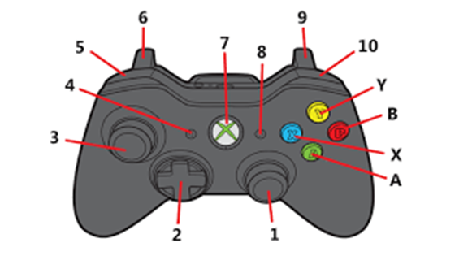
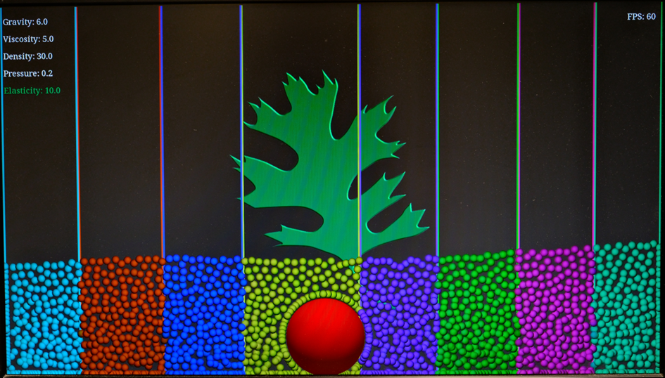

Was ist der Tiny Titan?
Er ist eine Gruppe von Computern, die zusammenarbeiten.
Was kann er?
Er kann im Grunde vieles aber, was ihr gerade sieht, ist eine Physik Simulation.
Steuerung

1: Ball Größer ↑, Ball Kleiner ↓
2: ↑ und ↓ zum Auswählen und ↔ zum umstellen
3: Bewegen
5: Entfernt Barrieren
6: Kugelansicht und Wasseransicht wechseln
7: Controller an
9: Barrieren Ansicht an und aus
10: Fügt Barrieren hinzu
A: Gravity 0
B: Density 0 und Pressure 0 Elasticity 115
Y: Density 30 Elasticity -30
X: Standarteinstellung
Erklärungen
Gravity
(de. Gravitation) Die Kraft, die Gegenstände „herunterfallen“ lässt.
Hier sind es die Kugeln und die große Kugel.
1 oder mehr bedeutet, dass die Kugeln auf den Boden gedrückt werden
0 bedeutet, dass die Kugeln frei fliegen
-1 oder weniger bedeutet, dass die Kugeln auf die Decke gedrückt werden
Viscosity
(de. Viskosität) drückt aus wie dick oder dünn flüssig die Kugeln oder das Wasser ist.
Density:
(de. Dichte) Beschreibt wie nah Moleküle beisammen stehen.
Je höher die Dichte desto näher sind sich die Moleküle (Moleküle sind ganz kleine teilchen)
Pressure
(de. Druck) Stell dir vor, du hast einen Schuh in der Hand und drückst damit auf einen Luftballon. Je fester du drückst, desto mehr Luft entweicht aus dem Ballon. Das liegt daran, dass du mit deinem Schuh eine Kraft auf den Ballon ausübst. Diese Kraft verteilt sich auf die gesamte Fläche des Schuhs.
Druck ist die Kraft, die auf eine Fläche ausgeübt wird. Je kleiner die Fläche ist, desto größer ist der Druck, wenn die gleiche Kraft ausgeübt wird.
Elasticity
(de. Elastizität) Wie weit sich die Kugeln oder das Wasser dehnen lassen
Tiny Titan und die 5 Säulen Wirtschaftsinformatik
Informatik:
Hochleistungsrechnen: Tiny Titan kann für rechenintensive Aufgaben eingesetzt werden, die auf einem einzelnen Raspberry Pi zu lange dauern würden.
Z. B. Simulationen, KI-Training oder Videobearbeitung.
Datenanalyse: Mit seiner parallelen Verarbeitungsleistung kann Tiny Titan große Datensätze schnell und effizient analysieren, um Muster und Trends zu erkennen.
Entwicklung und Testen von Software: Tiny Titan kann als Entwicklungsplattform für neue Softwareanwendungen verwendet werden. Die parallele Ausführung ermöglicht es, verschiedene Versionen einer Anwendung gleichzeitig zu testen.
Robotik und IoT: Tiny Titan kann als Steuerungszentrum für Roboter und IoT-Geräte eingesetzt werden. Seine Flexibilität ermöglicht die Anpassung an verschiedene Anwendungsfälle
Informationssysteme:
Speicherung und Verwaltung von Daten: Tiny Titan kann als dezentraler Datenspeicher verwendet werden, um sensible Daten sicher und redundant zu speichern.
Webserver und Cloud Computing: Tiny Titan kann als Webserver eingesetzt werden, um Websites und Anwendungen bereitzustellen. Er kann auch in Cloud-Computing-Umgebungen integriert werden.
Netzwerkmanagement und -überwachung: Tiny Titan kann zur Überwachung von Netzwerken und zur Identifizierung von Problemen eingesetzt werden.
Programmieren:
Lernen und Üben von Programmiersprachen: Tiny Titan bietet eine günstige und flexible Plattform zum Erlernen und Üben von Program-miersprachen wie Python, Java oder C++.
Entwicklung von parallelen Programmen: Tiny Titan ermöglicht die Entwicklung und Ausführung von parallelen Programmen, die die Rechenleistung mehrerer Raspberry Pis nutzen.
Fehlerbehebung und Debugging: Tiny Titan kann zur Fehlerbehebung und zum Debugging von Programmen eingesetzt werden, indem die Ausführung auf mehrere Raspberry Pis verteilt wird.
Betriebswirtschaft:
Simulation von Geschäftsprozessen: Tiny Titan kann zur Simulation von Geschäftsprozessen verwendet werden, um deren Effizienz zu verbessern und mögliche Probleme zu identifizieren.
Datenanalyse für Marketing und Vertrieb: Tiny Titan kann große Da-tenmengen aus Marketing- und Vertriebskampagnen analysieren, um Kundensegmente zu identifizieren und gezielte Kampagnen zu entwickeln.
Risikobewertung und -management: Tiny Titan kann zur Bewertung und zum Management von Unternehmensrisiken eingesetzt werden, indem große Datenmengen analysiert werden.
Prozessmanagement:
Workflow-Automatisierung: Tiny Titan kann zur Automatisierung von Workflows in Unternehmen eingesetzt werden, um die Effizienz und Produktivität zu verbessern.
Lieferkettenmanagement: Tiny Titan kann zur Optimierung von Lieferketten eingesetzt werden, indem Daten aus verschiedenen Quellen gesammelt und analysiert werden.
Qualitätsmanagement: Tiny Titan kann zur Überwachung und Verbesserung der Qualität von Produkten und Dienstleistungen eingesetzt.
Barrieren

Jede Barriere (oder unterschiedliche Farbe) die hinzugefügt wurde repräsentiert ein weiteren PC der dazugeschalten wurde. Mehr Farben bedeutet mehr PCs. Es wird die selbe Leistung erbracht, aber es wird auf mehrere PCs aufgeteilt. Wie Teamwork. Jeder hat eine Aufgabe und wenn man zusammenarbeitet wird man schneller fertig.
Ressourcen
Tiny Titan Website: https://github.com/TinyTitan
Tiny Titan GitHub Repository: https://github.com/TinyTitan
Tiny Titan Software: https://github.com/TinyTitan
Tiny Titan Anleitung: https://tinytitan.github.io/downloads/TinyTitanBuildGuide.pdf